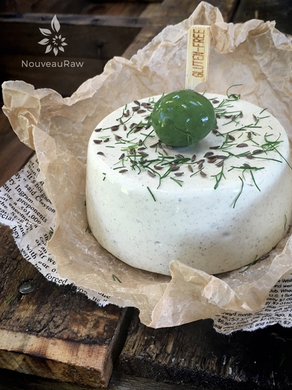

Caraway and Dill Cheese

raw / vegan / gluten-free
I love all of the raw cheese recipes that I have made so far, but I think that this one is my favorite. But then, I crave all things caraway and dill. Why? Because they are a perfect duet that harmonizes together beautifully.
Speaking of harmonizing… I can’t, but that doesn’t mean that I don’t try. :) Bob and I love to sing. He, on the other hand, CAN sing and down-right amazing if I may say so myself. I can honestly say that he sings to me nearly every day, and brings me the greatest peace.
When I am stressed, Bob sings to me, and it instantly starts to lower my cortisol levels. So much better than any supplement on the market. hehe
One thing that I don’t do well with is doctors. When I walk into their office or the hospital, I immediately start to get queasy. Bob just holds my hand and starts to hum. He accompanies me to every appointment; I don’t care what they are going to do with me, he is right there beside me.
He even fights to get into procedures where others normally are not allowed. For as soon as the needles come out, knees buckle, tummy turns, mouth waters, I get light-headed, the whole nine yards. Bob is the same, BUT he is a trooper. He holds my hand through shots, blood draws, etc. wondering, but that’s not all… he sings. He keeps my eyes focused on his, caresses my hand, and sings the most beautiful and romantic songs to me. I can’t tell you how many job offers he has gotten out of this. :) I am very blessed to have such an amazing husband.
I am not sure why I got off on all that. I hope that you don’t mind me sharing. One minute we are talking cheese, the next minute we are in doctor’s office being poked and sung too.
In this recipe, I used cashews as my base. If you are not able to eat cashews, you can use sunflower seeds in place of them. It will affect the flavor a tad but it will still be quite good. To create the structure of this cheese I used agar which is not a raw product but it does have a lot of great health attributes to it, so we are ok with having some every now and then. I don’t recommend using anything as a replacement for agar, for it has very unique properties that give it that firm texture.
Nutritional yeast is also a big player in these cheese recipes. It is what gives it that “cheesy” flavor. I am doing some testing with another product to see if it can be a replacement, but until I work that out, I don’t have a substitution for this ingredient either. Well, I have rambled enough, it’s time to let you go so you can make this recipe. Many blessings, amie sue
yields about 2 cups
- 1/2 cup water
- 2 Tbsp fresh lemon juice
- 2 Tbsp tahini
- 1/2 cup cashews, soaked 2+ hours
- 1/4 cup nutritional yeast
- 2 tsp ground caraway seeds
- 1 tsp Himalayan pink salt
- 1/2 tsp garlic powder
- 1/2 tsp onion powder
- 1/4 tsp black pepper
- 1 tsp dried dill
- 1 tsp whole caraway seeds
Agar gel:
Preparation:
Cheese base:
- Set aside a 2 cup storage container. You can use any shape or mold.
- In a high-speed blender add 1/2 cup water, lemon juice, tahini, cashews, nutritional yeast, ground caraway seeds, salt, garlic powder, onion powder, and black pepper. Blend until smooth, no grit should be detected. We will add the caraway whole seeds and dill towards the end.
Agar gel:
- In a small saucepan bring 1 cup water and the agar to boil. Whisk briskly.
- Reduce the heat and simmer, whisking often, for 5 to 10 minutes, or until completely dissolved.
- Before adding the agar gel to the blender, get a vortex going in it.
- Slowly pour the agar gel into the blender.
- Working quickly.
- Process until completely smooth, scraping down the sides of the blender jar as necessary.
- Quickly add the dill and caraway seeds and just blend it in for a few seconds. Leave bits and pieces for visual and texture purposes.
- Pour into container(s) and cool uncovered in the refrigerator.
- When completely cool, cover and chill for several hours. To serve, turn over the container to release and slice.
- Store covered in the refrigerator. Will keep 5 to 7 days.

This cheese slices, dices, and grates beautifully.
© AmieSue.com